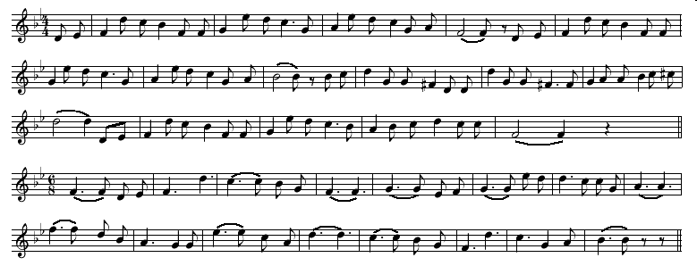
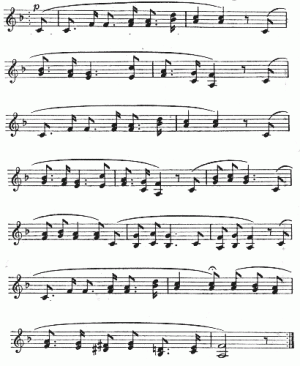

Man Bieau P'tit Jèrri
Man Bieau P'tit Jèrri (mp3 - les patholes)
|
Y'a un coin d'tèrre qué j'aime, qué j'n'oubliéthai janmais -
Dans mes pensées tréjous preunmyi - Car jé n'vai rein à compather à ses bieautés Dans touos mes viages à l'êtrangi. Jèrri, man paradis, pus belle taque souos l'solé - Qué j'aime la paix dé chu Jèrri! L'amour lé veurt, j'ai si envie dé m'en r'aller Èrvaie man chièr pétit pays,
Man bieau p'tit Jèrri, la reine des îles -
Jé connais touos tes charmes; et combein qu' j'en ai joui
Man bieau p'tit Jèrri, la reine des îles -
|

Et en Angliais....
Beautiful Jersey
There's a spot that I love that I ne'er can forget,
Beautiful Jersey, gem of the sea,
On thy shores I have wandered in glad days of yore,
Beautiful Jersey, gem of the sea,
Tho' far I may roam 'twill be dear.
For its beauty will linger in memory yet,
Where'er o'er the world I may steer.
Dear Jersey, fair Isle, of the ocean the queen,
Thy charms are so many and rare;
For love finds a home 'mid each beauteous scene,
My heart ever longs to be there.
Ever my heart turns in longing to thee;
Bright are the mem'ries you waken for me,
Beautiful Jersey, gem of the sea.
With one who is dear to my heart.
And the love-links will bind us as one evermore,
Although for a while we must part.
And oft in my dreams do I see the dear place
The dear little Isle of the sea,
And in fancy I gaze on a sweet loving face,
The face that is dearest to me.
Ever my heart turns in longing to thee;
Bright are the mem'ries you waken for me,
Beautiful Jersey, gem of the sea.
J'ai vu les champs de l'Helvétie,
Et ses chalets et ses glaciers,
J'ai vu le ciel de l'Italie,
Et Venise et ses gondeliers.
En saluant chaque patrie,
Je me disais aucun séjour
N'est plus beau que ma Normandie,
C'est le pays qui m'a donné le jour.
Il est un âge dans la vie,
Ou chaque rêve doit finir,
Un âge ou l'âme recueillie
A besoin de se souvenir.
Lorsque ma muse refroidie
Vers le passé fera retour,
J'irai revoir ma Normandie,
C'est le pays qui m'a donné le jour.

Ma Normandie - musique en mp3 (vèrsion d'orchestre)
Ma Normaundie
Vèrsion Nouormande dé Frédéric Vaquin
Quaund no ratouorne à l’espéraunche,
et que la freid est louen de nouos.
Pis qu’no reveî des biaos Daimmaunches,
et que l’solé revyint pllus doux.
Quaund le r’nouvé est raccachi,
joaunats, promioles, hérondes itou,
J’îme cha d’arveî ma Normaundie,
ch’est lyi l’pays qui m’a bailli eul jou.
J’i veu les cllos eud l’Helvétie,
et touôte la nyige ammonchellaée.
Guettyi eul cyil eud l’Italie,
et Venise et ses biaos batés.
De touos pays d’exçaès joulyis,
mei vo preachyi qu’aôqueuns in’tou,
N’est pu biao que ma Normaundie,
ch’est lyi l’pays qui m’a bailli eul jou.
Vyint le temps de la souovenanche,
ou touôte histouêre deit finin.
Le temps ou touôte tête bllanche
a besouen de se souvenin.
Quaund je m’érai byin ébraillyi,
dégoublinaé praêt au retou
J’érai arveî ma Normaundie,
ch’est lyi l’pays qui m’a bailli eul jou.
Quaund touot rémôque et réquémenche
Et qué l’ hivé s’élouengne dé nouos
Souos lé biâo cyil dé noute Fraunce
Quaund lé solé devyint pus dous
Quaund la natueure s’est révillie
Et qué l ’érounde rest, dé rétouor
J’aime à reveî ma Normaundie
Ch’est le païs qui m’à dounaé lé jouor.
J’i veu d’ Espanne les oraungis
Et ses arâenes et ses toriâos
J’i veu les pllannes dé l’ Italie
Et Vénise et ses goundoliâos.
En lâonaunt, dauns touos ches païs
Je mé disais : nennin j’i paé poue
Touot cha ne vâot paé ma Normaundie
Ch’est lé païs qui m’a dounaé lé jouor.
Mais y a eun âge dauns la vie
Pouor se révilli et ne pus rêvaer,
Moument où l’ âme retcheullie,
A bésouen dé sé rémouvaer.
Alouors quaund ma mueuse s’sa desséquie,
Qu’ ourount finin ses caunts d’amouor.
J’acach’chai veî ma Normaundie,
Ch’est lé paîs qui m’a dounaé lé jouor.
I' y'a des gens tchi sembl'yent craithe
Qué ché n'est rein qu'lé p'tit Jèrri;
Qu'i' n'y trouvent rein à lus pliaithe,
Mais bein dé tchi à mêprisi:
N'faut pas qu'il' aient grande connaîssance,
Les cheins qu'nou ouait conter d'ité;
Mal pâler du lieu d'sa naîssance
Est et es'sa tréjous bein laid.
J'ai veu l'Angliétèrre et la France,
L'Italie, la Suisse et ses monts;
Tchi qu'nou-s'en aise et qu'nou-s'en pense,
J'aime mus Jèrri et ses vallons:
Nou pâle dé lacs et dé montangnes,
Nou pâle dé vîngne et d'orangièrs;
Rein n'est pus bé qué nouos campangnes,
Rein n'est pus bé qué nouos pommièrs.
Tch'est-che qu'eune orange auprès des pommes?
Tch'est-ché qu'un lac auprès d'la mé?
Jé sommes bein comme jé sommes,
J'n'avons vraînment rein à envier:
J'n'avons pas d'craie mais dé bouanne tèrre,
Pas d'riviéthe et d'înnondâtions,
Qué nou-s'ait la paix ou la dgèrre,
Jé souffrons mains qu'les grandes nâtions.
N'y'a pon caleu ni d'fréduthe
À compather ès grands pays;
Lé pus rude hivé, nou l'enduthe,
Et l'êté nou n'est pon hâvis:
Les bieaux vallons dé tchi nou d'vise,
Les gardîns, côtis et russieaux,
Tout jusqu'à la pouôrre vielle églyise,
Mé pathaîssent tréjous pus bieaux.
L'Cidre est un excellent brévage
S'il est de bouanne qualité;
Si nou lé fait d'un bouan pommage,
S'il est étout bein apprêté:
J'ai ouï qu'un Minnistre d'campangne,
Pus avisé qué cheux qu'j'avons,
Faisait pâsser pouor du champangne
Dé fanmeux p'ré dé sa faichon.
À prendre Jèrri tout ensembl'ye,
Souos tout lé touannant du solé,
I' n'y'a pas dé pliaiche tchi m'sembl'ye
Préféthabl'ye d'autchun côté:
St. Louothains, ma vielle pâraisse,
Tu m'pliais pus qu'nulle autre en Jèrri,
Dé men tchoeu tu reste maitrêsse
Jé t'aim'thai jusqu'au drein soupi.
Eune vielle vèrsion Angliaîche: